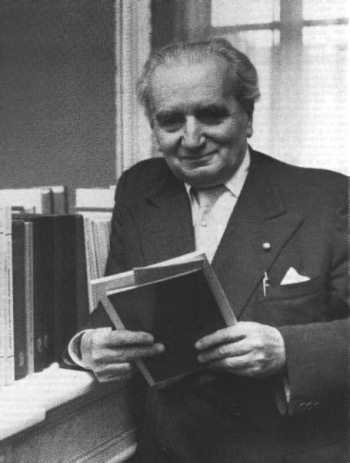

Группа Теодора фон Кармана
Гораздо больший, чем «Американское ракетное общество», вклад в американскую космонавтику внесла группа, возникшая в 1936 году в Калифорнийском технологическом институте. Ее организатором и идейным вдохновителем стал доктор Теодор фон Карман. Кроме него в группу вошли Фрэнк Мэлина, Цзян Сюсэнь, Аполло Смит, Джон Парсонс, Эдвард Форман и Уэлд Арнольд. Ныне группа фон Кармана известна всему миру как «Лаборатория реактивного движения». Но это сейчас. А в середине 1930-х годов основной задачей первого этапа исследовательских работ, финансировавшихся Арнольдом, было конструирование ракеты для изучения верхних слоев атмосферы.
Прежде чем рассказать о деятельности калифорнийского «Ракетного общества», несколько слов о его руководителе – Теодоре фон Кармане.
Родился Теодор в 1881 году в Венгрии. В 1902 году окончил Королевский технический университет в Будапеште, занимался конструированием двигателей внутреннего сгорания. Продолжил образование в Геттингенском университете, где в 1909 году защитил диссертацию, получил степень доктора философии и до 1912 года работал доцентом. В 1913–1930 годах фон Карман был профессором и директором Аэродинамического института при Ахенском университете. В 1915–1918 годах возглавлял исследовательский отдел военно-воздушных сил Австро-Венгрии, занимался вертолетостроением. В 1920-е годы фон Карман по приглашению Дэвида Гуггенхейма, основателя фонда развития аэронавтики, читал лекции в научно-исследовательских центрах США, а в 1927 году – в Японии, Китае и Индии. В 1930 году возглавил Гуггенхеймовскую аэролабораторию при Калифорнийском технологическом институте.
Теодор фон Карман был теоретиком, а не практиком ракетостроения. Он больше занимался изучением сопутствующих дисциплин – аэро-, гидро– и термодинамики, сопротивления материалов, теории пластичности и прочего. В истории ракетной техники нельзя найти ни одной ракеты, где главным конструктором не значился бы фон Карман. Ни одна ракета не смогла бы летать, если бы не работы этого ученого. Это прекрасно понимали специалисты всего мира. Поэтому и избрали в 1960 году фон Кармана первым президентом созданной тогда Международной академии астронавтики. Но это будет потом, а тогда, в 1930-х годах, перед «Ракетным обществом» при Калифорнийском технологическом институте стояли совершенно другие задачи.
Как показали дальнейшие события, эта группа проделала огромную работу, не ограничившись созданием высотной ракеты. Ею была отработана целая серия ракетных топлив, сконструирован и запущен в массовое производство первый американский стартовый ракетный ускоритель и проведено много весьма ценных исследований.
Что касается проекта создания высотной ракеты, то в конкретную форму его облекли только в ноябре 1943 года, когда фон Карман, Мэлина и Цзян Сюсэнь направили памятную записку в управление артиллерийско-технического снабжения армии США. В ответ на нее генерал-майор Дж. Барнс потребовал, чтобы группа форсировала начатые работы. Эта программа получила название проекта ORDICIT (сокращение от Ordnance and California Institute of Technology, то есть совместный проект артиллерийско-технического управления и Калифорнийского института).
Первой системой, разработанной согласно этому проекту, была ракета «Прайвит А», имевшая длину около 2,4 метров. Она была сконструирована для полета со сверхзвуковой скоростью и поэтому имела заостренный носовой конус. В нижней части ракеты были смонтированы четыре стабилизатора, причем каждый из них выступал из корпуса двигательного отсека на 30 сантиметров. Полный вес ракеты составлял более 225 килограммов, включая полезную нагрузку в 27 килограммов. Снабженная двигательной установкой фирмы «Аэроджет» на твердом топливе, ракета создавала тягу порядка 450 килограммов в течение более 30 секунд.
Ускоритель старта представлял собой стальной корпус с четырьмя 114-миллиметровыми артиллерийскими ракетами, запускаемыми одновременно. Снабженный отверстием в центре для прохода струи газов маршевого двигателя ракеты ускоритель создавал дополнительную тягу при взлете свыше 9700 килограммов. На пусковой установке были предусмотрены приспособления, препятствующие вращению как ракеты, так и ускорителя. Для предотвращения чрезмерной перегрузки, которая неизбежно могла возникнуть, если запуск ускорителя происходил после запуска маршевого двигателя, ускоритель крепился на ракете с помощью срезной шпильки.
Пусковая установка была выполнена в виде прямоугольной фермы длиной 11 метров с четырьмя направляющими рельсами внутри. Ферма устанавливалась на стальном основании, с которым соединялась посредством шарниров. Это обеспечивало возможность наводки в вертикальной и горизонтальной плоскостях. Ферма предназначалась, во-первых, для поддержания ракеты и направления ее по траектории до тех пор, пока не разовьет скорость, достаточную для приобретения аэродинамической устойчивости, а во-вторых, для обеспечения полного выгорания топлива и отсоединения ускорителя от ракеты «Прайвит», прежде чем та покинет пусковую установку.
Испытания ракеты «Прайвит A» проводились с 1 по 16 декабря 1944 года на полигоне Лич-Спринг в Калифорнии. Всего было произведено 24 пуска. Средняя дальность полета ракет составила около 16 километров, максимальная – 18 километров.
Вслед за ракетой «Прайвит А» была подготовлена к испытаниям опытная ракета «Прайвит F». Она была построена для исследования влияния несущих поверхностей на полет управляемого снаряда и по существу мало чем отличалась от своей предшественницы. Однако вместо четырех симметричных перьев стабилизатора в хвостовой части она несла только одно перо и две горизонтальные несущие поверхности с размахом до 1,5 метров. В головной части снаряда для создания аэродинамического равновесия были установлены два тупых крыла с размахом около 1 метра.
Ускоритель старта ракеты «Прайвит F» почти целиком повторял конструкцию ускорителя «Прайвит A». Однако наличие крыльев и несущих поверхностей на ракете потребовало переделки пусковой установки. Новая установка имела ажурную конструкцию, выполненную из стали, с двумя рельсами снаружи вместо прежних четырех внутри.
Летные испытания ракеты состоялись с 1 по 13 апреля 1945 года на полигоне Гуеко в Форт-Блисс, что в штате Техас. Полигон был оборудован радиолокатором наблюдения за траекторией полета ракет и кинокамерами для съемки начального участка траектории. Всего было запущено 17 ракет.
Как «Прайвит А», так и «Прайвит F» предназначались лишь для изучения конструкции ракет. Приборы, которые на них устанавливались, должны были давать сведения о поведении ракеты в полете. Однако вскоре из управления артиллерийско-технического снабжения поступило задание определить возможность создания такой ракеты для исследования верхних слоев атмосферы, которая могла бы поднять полезный груз весом около 11 килограммов на высоту до 30 километров.
Эта ракета, получившая название «Капрал», была сконструирована в расчете на жидкие топлива. Однако при этом не имелись в виду ни комбинация из бензина и жидкого кислорода, которую применял Годдард, ни немецкая смесь из спирта и жидкого кислорода. На первом этапе работы калифорнийская группа провела глубокое теоретическое исследование жидких окислителей, которые могли бы заменить жидкий кислород. Они остановились на азотной кислоте, которая при разложении выделяет 63,5 % свободного кислорода. Вначале они работали с относительно чистой промышленной азотной кислотой, однако спустя некоторое время было установлено, что ее свойства можно улучшить путем растворения в ней двуокиси азота, то есть путем превращения ее в так называемую дымящую азотную кислоту. Горючим по-прежнему оставался бензин. И хотя эта топливная смесь нашла тогда применение, ее свойства никого до конца не устраивали.

Теодор Карман
Исследователи в Аннаполисе испытывали примерно такие же затруднения. В то время там активно работали две группы, перед которыми стояла одна и та же задача – разработать реактивный ускоритель старта для морского патрульного бомбардировщика типа PBY. Одну группу возглавлял Годдард, другую – капитан 3-го ранга Труэкс. Группа Труэкса, проводя опыты с рядом топлив, установила, что некоторые жидкости при соприкосновении с азотной кислотой воспламеняются самопроизвольно. Впервые это явление наблюдалось на скипидаре; потом оказалось, что и анилин дает такой же эффект.
Приблизительно в это время в Аннаполис приехал Фрэнк Мэлина и детально ознакомился со всем, что здесь делалось. О своих наблюдениях он сообщил по телефону в Калифорнию доктору мартину Саммерфилду. После этого ракета «Капрал» была переконструирована так, чтобы стало возможным использование в качестве топлива смеси анилина с 20 %-ной добавкой фурфурилового спирта для понижения точки замерзания. Это была первая американская баллистическая ракета, в которой применялся данный вид топлива.
Еще до окончания отработки ракеты «Капрал» понадобилось установить экспериментальным путем, насколько основные характеристики ракеты соответствуют расчетным. Для этого была сделана модель (в одну пятую натуральной величины) ракеты, получившая название «Бэби-ВАК». Опытные запуски модели производились на полигоне Голдстоун с 3 по 5 июля 1945 года.
Эти опыты подтвердили правильность выбора трех стабилизаторов вместо обычных четырех и обоснованность конструкции стартового ускорителя на твердом топливе. В окончательном виде ракета «Капрал» представляла собой трубу с длинной конической носовой частью и тремя стабилизаторами общей длиной 5 метров и диаметром 30 сантиметров. Стартовый вес ракеты без ускорителя несколько превышал 300 килограммов, а «сухой» вес с полезной нагрузкой равнялся 130 килограммам. Двигатель ракет создавал на протяжении 45 секунд работы тягу порядка 680 килограммов.
Давление для подачи компонентов топлива в камеру сгорания создавалось сжатым воздухом, а не азотом, как это делалось раньше. Такая замена позволила значительно упростить эксплуатацию ракеты в полевых условиях.
Двигательная установка ракеты включалась с помощью особого инерционного клапана. Когда ускоритель сообщал ракете скорость, достаточную для отрыва от пусковой установки, клапан под действием силы инерции автоматически открывался и сжатый воздух устремлялся одновременно в топливные баки и к приводному поршню главного топливного клапана.
Вместе с метеорологическими приборами в носовой части ракеты «Капрал» размещались парашют и автоматические устройства для сбрасывания носового конуса и раскрытия парашюта; это устройство предназначалось для сохранения в целости приборов, установленных в ракете.
Первоначально выбранный ускоритель старта оказался недостаточно эффективным, поэтому он был заменен одним из вариантов морской ракеты, известной под названием «Тайни Тим», для чего была увеличена тяга ее двигателя, а также подвергнуты изменению стабилизаторы и головная часть. В первом варианте ракета «Тайни Тим» имела двигатель, обеспечивавший тягу примерно в 13,5 тонн в течение 1 секунды, но после изменения конструкции двигатель ее стал развивать тягу до 22,7 тонн за время немногим больше полсекунды.
Однако расчеты показывали, что за это время ускоритель и ракета поднимутся на высоту 65 метров. Разумеется, построить такую пусковую вышку не представлялось возможным. Поэтому было решено сохранить прежнюю высоту вышки (30 метров). Следовательно, разгон ракеты должен был продолжаться и на начальном участке траектории, вне пределов пусковой вышки.
Летные испытания ракеты «Капрал» были проведены с 26 сентября по 25 октября 1945 года на испытательном полигоне в штате Нью-Мексико. По данным радиолокатора, ракета достигла в вертикальном полете высоты 70 километров. Значительное превышение высоты по сравнению с расчетной объяснялось главным образом снижением веса самой ракеты за счет конструктивных изменений, а также увеличением начального импульса в связи с использованием в качестве ускорителя старта «Тайни Тим».
Летными испытаниями ракеты «Капрал» заканчивается важный этап в развитии американской ракетной техники. До этого момента американские инженеры шли «своим путем», не испытывая сильного влияния на свою деятельность со стороны европейских конструкторских школ. Но все изменилось с окончанием Второй мировой войны и появлением на американском континенте немецких специалистов во главе с Вернером фон Брауном.